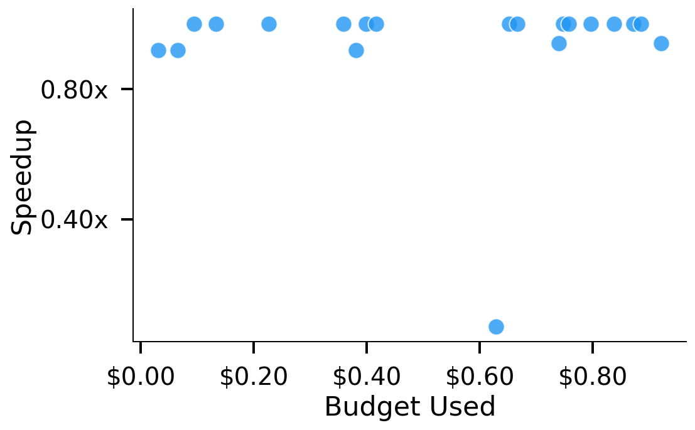
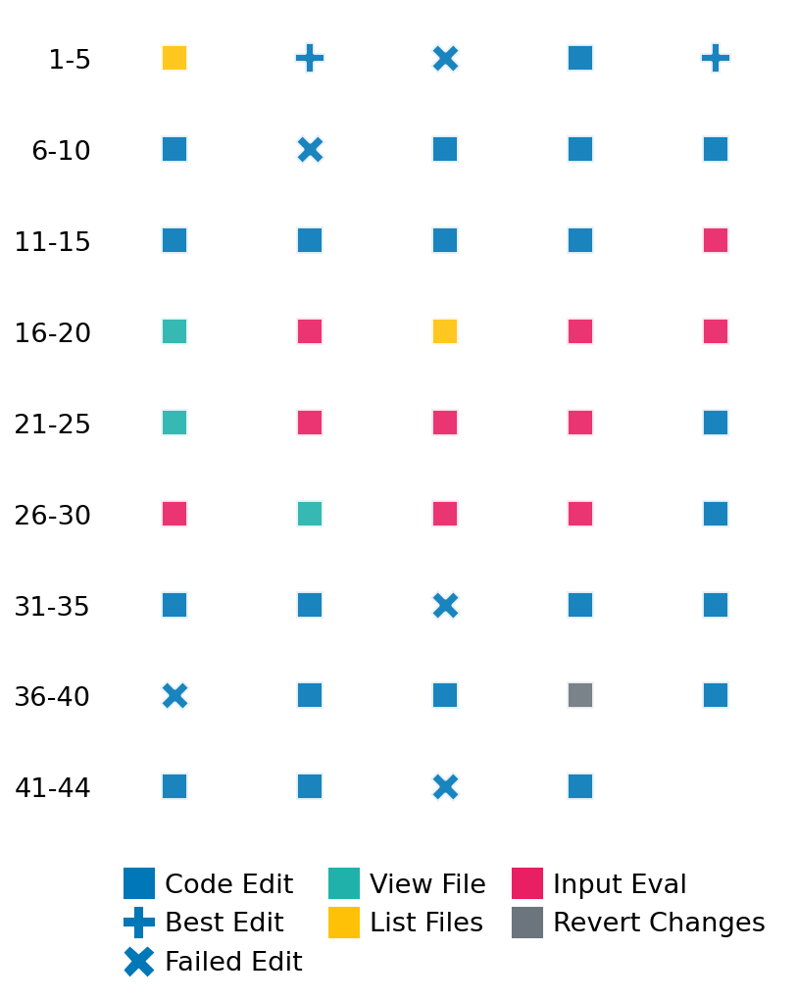

SETTING:
You're an autonomous programmer tasked with solving a specific problem. You are to use the commands defined below to accomplish this task. Every message you send incurs a cost—you will be informed of your usage and remaining budget by the system.
You will be evaluated based on the best-performing piece of code you produce, even if the final code doesn't work or compile (as long as it worked at some point and achieved a score, you will be eligible).
Apart from the default Python packages, you have access to the following additional packages:
- cryptography
- cvxpy
- cython
- dace
- dask
- diffrax
- ecos
- faiss-cpu
- hdbscan
- highspy
- jax
- networkx
- numba
- numpy
- ortools
- pandas
- pot
- psutil
- pulp
- pyomo
- python-sat
- pythran
- scikit-learn
- scipy
- sympy
- torch
YOUR TASK:
Your objective is to define a class named `Solver` in `solver.py` with a method:
```
class Solver:
def solve(self, problem, **kwargs) -> Any:
"""Your implementation goes here."""
...
```
IMPORTANT: Compilation time of your init function will not count towards your function's runtime.
This `solve` function will be the entrypoint called by the evaluation harness. Strive to align your class and method implementation as closely as possible with the desired performance criteria.
For each instance, your function can run for at most 10x the reference runtime for that instance. Strive to have your implementation run as fast as possible, while returning the same output as the reference function (for the same given input). Be creative and optimize your approach!
Your messages should include a short thought about what you should do, followed by a _SINGLE_ command. The command must be enclosed within ``` and ```, like so:
<Reasoning behind executing the command>
```
<command>
```
IMPORTANT: Each set of triple backticks (```) must always be on their own line, without any other words or anything else on that line.
Here are the commands available to you. Ensure you include one and only one of the following commands in each of your responses:
- `edit`: Replace a range of lines with new content in a file. This is how you can create files: if the file does not exist, it will be created. Here is an example:
```
edit
file: <file_name>
lines: <start_line>-<end_line>
---
<new_content>
---
```
The command will:
1. Delete the lines from <start_line> to <end_line> (inclusive)
2. Insert <new_content> starting at <start_line>
3. If both <start_line> and <end_line> are 0, <new_content> will be prepended to the file
Example:
edit
file: solver.py
lines: 5-7
---
def improved_function():
print("Optimized solution")
---
- `ls`: List all files in the current working directory.
- `view_file <file_name> [start_line]`: Display 100 lines of `<file_name>` starting from `start_line` (defaults to line 1).
- `revert`: Revert the code to the best-performing version thus far.
- `reference <string>`: Query the reference solver with a problem and receive its solution. If the problem's input is a list, this command would look like:
```
reference [1,2,3,4]
```
- `eval_input <string>`: Run your current solver implementation on the given input. This is the only command that shows stdout from your solver along with both solutions. Example:
```
eval_input [1,2,3,4]
```
- `eval`: Run evaluation on the current solution and report the results.
- `delete`: Delete a range of lines from a file using the format:
```
delete
file: <file_name>
lines: <start_line>-<end_line>
The command will delete the lines from <start_line> to <end_line> (inclusive)
Example:
delete
file: solver.py
lines: 5-10
```
- `profile <filename.py> <input>`: Profile your currently loaded solve method's performance on a given input. Shows the 25 most time-consuming lines. Requires specifying a python file (e.g., `solver.py`) for validation, though profiling runs on the current in-memory code.
Example:
```
profile solver.py [1, 2, 3]
```
- `profile_lines <filename.py> <line_number1, line_number2, ...> <input>`: Profiles the chosen lines of the currently loaded code on the given input. Requires specifying a python file for validation.
Example:
```
profile_lines solver.py 1,2,3 [1, 2, 3]
```
**TIPS:**
After each edit, a linter will automatically run to ensure code quality. If there are critical linter errors, your changes will not be applied, and you will receive the linter's error message. Typically, linter errors arise from issues like improper indentation—ensure your edits maintain proper code formatting.
**Cython Compilation:** Edits creating or modifying Cython (`.pyx`) files will automatically trigger a compilation attempt (requires a `setup.py`). You will be notified if compilation succeeds or fails. If it fails, the edit to the `.pyx` file will be automatically reverted.
If the code runs successfully without errors, the in-memory 'last known good code' will be updated to the new version. Following successful edits, you will receive a summary of your `solve` function's performance compared to the reference.
If you get stuck, try reverting your code and restarting your train of thought.
Do not put an if __name__ == "__main__": block in your code, as it will not be ran (only the solve function will).
Keep trying to better your code until you run out of money. Do not stop beforehand!
**GOALS:**
Your primary objective is to optimize the `solve` function to run as as fast as possible, while returning the optimal solution.
You will receive better scores the quicker your solution runs, and you will be penalized for exceeding the time limit or returning non-optimal solutions.
Below you find the description of the task you will have to solve. Read it carefully and understand what the problem is and what your solver should do.
**TASK DESCRIPTION:**
CholeskyFactorization Task:
Given a symmetric positive definite matrix A, the task is to compute its Cholesky factorization.
The Cholesky factorization decomposes A as:
A = L · L^T
where L is a lower triangular matrix.
Input: A dictionary with key:
- "matrix": A list of n lists of numbers representing the symmetric positive definite matrix A. (The dimension n is inferred from the matrix.)
Example input:
{
"matrix": [
[6.0, 15.0, 55.0],
[15.0, 55.0, 225.0],
[55.0, 225.0, 979.0]
]
}
Output: A dictionary with key "Cholesky" mapping to a dictionary containing:
- "L": A numpy array representing the lower triangular matrix L.
These matrices satisfy the equation A = L · L^T.
Example output:
{
"Cholesky": {
"L": [
[2.449489742783178, 0.0, 0.0],
[6.123724356957945, 1.4142135623730951, 0.0],
[22.453, 4.123105625617661, 1.7320508075688772]
]
}
}
Category: matrix_operations
Below is the reference implementation. Your function should run much quicker.
import random
import numpy as np
| 01: def solve(self, problem: dict[str, np.ndarray]) -> dict[str, dict[str, list[list[float]]]]:
| 02: """
| 03: Solve the Cholesky factorization problem by computing the Cholesky decomposition of matrix A.
| 04: Uses numpy.linalg.cholesky to compute:
| 05: A = L L^T
| 06:
| 07: :param problem: A dictionary representing the Cholesky factorization problem.
| 08: :return: A dictionary with key "Cholesky" containing a dictionary with key:
| 09: "L": A list of lists representing the lower triangular matrix L.
| 10:
| 11:
| 12: NOTE: Your solution must pass validation by:
| 13: 1. Returning correctly formatted output
| 14: 2. Having no NaN or infinity values
| 15: 3. Matching expected results within numerical tolerance
| 16: """
| 17: A = problem["matrix"]
| 18: L = np.linalg.cholesky(A)
| 19: solution = {"Cholesky": {"L": L}}
| 20: return solution
| 21:
This function will be used to check if your solution is valid for a given problem. If it returns False, it means the solution is invalid:
import random
import numpy as np
| 01: def is_solution(
| 02: self, problem: dict[str, np.ndarray], solution: dict[str, dict[str, list[list[float]]]]
| 03: ) -> bool:
| 04: """
| 05: Check if the Cholesky factorization solution is valid and optimal.
| 06:
| 07: This method checks:
| 08: - The solution contains the 'Cholesky' key with subkey 'L'.
| 09: - The dimensions of L match the dimensions of the input matrix A.
| 10: - L is a lower triangular matrix.
| 11: - None of the values in L are infinities or NaNs.
| 12: - The product L @ L^T reconstructs the original matrix A within a small tolerance.
| 13:
| 14: :param problem: A dictionary containing the problem, with key "matrix" as the input matrix.
| 15: :param solution: A dictionary containing the Cholesky factorization solution with key "Cholesky"
| 16: mapping to a dict with key "L".
| 17: :return: True if the solution is valid and optimal, False otherwise.
| 18: """
| 19: A = problem.get("matrix")
| 20: if A is None:
| 21: logging.error("Problem does not contain 'matrix'.")
| 22: return False
| 23:
| 24: # Check that the solution contains the 'Cholesky' key.
| 25: if "Cholesky" not in solution:
| 26: logging.error("Solution does not contain 'Cholesky' key.")
| 27: return False
| 28:
| 29: cholesky_solution = solution["Cholesky"]
| 30:
| 31: # Check that 'L' key is present.
| 32: if "L" not in cholesky_solution:
| 33: logging.error("Solution Cholesky does not contain 'L' key.")
| 34: return False
| 35:
| 36: # Convert list to numpy array.
| 37: try:
| 38: L = np.array(cholesky_solution["L"])
| 39: except Exception as e:
| 40: logging.error(f"Error converting solution list to numpy array: {e}")
| 41: return False
| 42:
| 43: n = A.shape[0]
| 44:
| 45: # Check if dimensions match.
| 46: if L.shape != (n, n):
| 47: logging.error("Dimension mismatch between input matrix and Cholesky factor L.")
| 48: return False
| 49:
| 50: # Check for infinities or NaNs in L.
| 51: if not np.all(np.isfinite(L)):
| 52: logging.error("Matrix L contains non-finite values (inf or NaN).")
| 53: return False
| 54:
| 55: # Check if L is lower triangular.
| 56: if not np.allclose(L, np.tril(L)):
| 57: logging.error("Matrix L is not lower triangular.")
| 58: return False
| 59:
| 60: # Reconstruct A using L @ L^T.
| 61: A_reconstructed = L @ L.T
| 62:
| 63: # Check if A and A_reconstructed are approximately equal.
| 64: if not np.allclose(A, A_reconstructed, atol=1e-6):
| 65: logging.error(
| 66: "Reconstructed matrix does not match the original matrix within tolerance."
| 67: )
| 68: return False
| 69:
| 70: # All checks passed
| 71: return True
| 72:
 AlgoTuner Trajectory
AlgoTuner Trajectory
AlgoTune Task:
cholesky_factorization
Model:
o4-mini
Speedup
0.999x
Total Budget
$1.00
Initial System Prompt
AlgoTune Task Description
CholeskyFactorization Task:
Given a symmetric positive definite matrix A, the task is to compute its Cholesky factorization.
The Cholesky factorization decomposes A as:
A = L · L^T
where L is a lower triangular matrix.
Input: A dictionary with key:
- "matrix": A list of n lists of numbers representing the symmetric positive definite matrix A. (The dimension n is inferred from the matrix.)
Example input:
{
"matrix": [
[6.0, 15.0, 55.0],
[15.0, 55.0, 225.0],
[55.0, 225.0, 979.0]
]
}
Output: A dictionary with key "Cholesky" mapping to a dictionary containing:
- "L": A numpy array representing the lower triangular matrix L.
These matrices satisfy the equation A = L · L^T.
Example output:
{
"Cholesky": {
"L": [
[2.449489742783178, 0.0, 0.0],
[6.123724356957945, 1.4142135623730951, 0.0],
[22.453, 4.123105625617661, 1.7320508075688772]
]
}
}
Category: matrix_operations
Reference Implementation
import random
import numpy as np
def solve(self, problem: dict[str, np.ndarray]) -> dict[str, dict[str, list[list[float]]]]:
"""
Solve the Cholesky factorization problem by computing the Cholesky decomposition of matrix A.
Uses numpy.linalg.cholesky to compute:
A = L L^T
:param problem: A dictionary representing the Cholesky factorization problem.
:return: A dictionary with key "Cholesky" containing a dictionary with key:
"L": A list of lists representing the lower triangular matrix L.
NOTE: Your solution must pass validation by:
1. Returning correctly formatted output
2. Having no NaN or infinity values
3. Matching expected results within numerical tolerance
"""
A = problem["matrix"]
L = np.linalg.cholesky(A)
solution = {"Cholesky": {"L": L}}
return solutionBest AlgoTuner-Generated Code
solver.py
import numpy as np
class Solver:
def solve(self, problem, **kwargs):
A = problem["matrix"]
L = np.linalg.cholesky(A)
return {"Cholesky": {"L": L}}Speedup vs Budget Plot
Speedup vs Budget

Action Sequence
